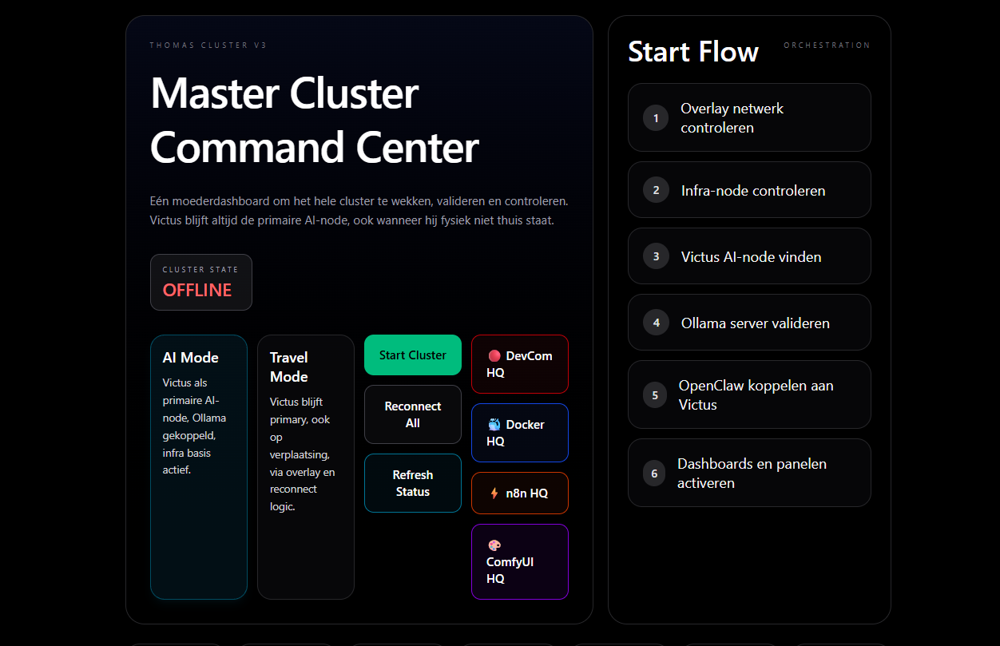

INFRASTRUCTUUR · DOCKER · n8n · OLLAMA
Thomas Cluster Dashboard
Eén zelf-gehost controleplatform voor mijn lokale AI- en automatiseringscluster: een master command center met Docker-, n8n-, Ollama/OpenClaw- en ComfyUI-modules onder één dak.
RESULTAAT
4 systemen — Docker, n8n, Ollama en ComfyUI — onder één command center met start- en reconnect-logica.

01 HET PROBLEEM
Een groeiend lokaal AI-lab is al snel een verzameling losse diensten: containers, automatiseringen, modelservers en GPU-workflows, elk met hun eigen venster. Alles apart opstarten en controleren kost tijd en gaat mis.
02 WAT HET DOET
- Master command center
- Eén moederdashboard om het hele cluster te wekken, valideren en controleren — met een start-flow die stap voor stap netwerk, infra-node, AI-node, Ollama en OpenClaw nakijkt.
- AI-mode & travel-mode
- De primaire AI-node blijft bereikbaar, ook wanneer de machine fysiek niet thuis staat, via een overlay-netwerk en reconnect-logica.
- Docker-module
- Containers overzien en beheren vanuit het dashboard in plaats van losse terminals.
- n8n-automatisering
- De automatiseringsmotor als eigen module, naast de rest van het cluster.
- Lokale modellen
- Ollama en OpenClaw gekoppeld: modellen starten en verbinden met de rest van de stack.
- ComfyUI / GPU-workflows
- Een aparte view voor beeldgeneratie en GPU-werk, als module van hetzelfde geheel.
03 WAT IK ERVAN LEERDE
De modules — Docker, n8n, Ollama, ComfyUI — zijn geen losse projecten maar vensters op één systeem. De echte waarde zat in de start-flow en reconnect-logica die van losse diensten één betrouwbaar cluster maken.
INTERESSE?
Laten we praten.
Vertel me wat je ervan vindt — of wat je ermee zou willen doen.